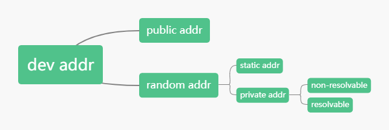

想要BLE slave做到“只允许指定设备连接”，可通过隐私机制、白名单、定向广播来实现，但是它们的概念是什么，互相之间是什么关系，以及如何起作用的，这篇笔记用于解答这些疑惑。
前言
最近工作上遇到了相关问题，趁这次机会整理一番。
首先介绍在BLE中地址、隐私机制、白名单、定向广播的概念，不完整，只需形成感性认识。
然后介绍各功能内部实现以及对外接口，加深认识。
最后参考nimble协议栈源码，slave在发送广播包和接收到连接请求包时在不同上下文所做的处理。
目录
1. 术语
dev addr：device address，设备地址，也有叫MAC地址。
rpa：resolvable private address，可解析的私人地址。
irk：identity resolving key，用于生成rpa
2. 概念简介
2.1. 地址
讨论白名单、隐私机制、定向广播总是绕不开BLE地址，所以笔者结合自己理解总结一下BLE地址的一些性质。

BLE细分共有4种地址：
public addr——向IEEE花钱买的全球唯一地址，设备上电后，断电前地址的值不会随着时间变化
random static addr——芯片随机生成的地址，设备上电后，断电前地址的值不会随着时间变化
random non-resolvable private addr——设备上电后，每隔一段时间根据随机数生成的随机地址，所以断电前地址的值会随着时间变化
random resolvable private addr——设备上电后，每隔一段时间根据irk和随机数生成的随机地址，所以断电前地址的值会随着时间变化
基于上述4个地址，可以衍生出device addr概念，device addr分为public device addr和random device addr两种。分别对应：public addr和random static addr、random non-resolvable private addr、random resolvable private addr。
可以这么表述：
手机系统蓝牙列表扫描到了附近很多蓝牙设备的device addr，其中那边那个手环的device addr现在就是个public地址。
手机系统蓝牙列表扫描到了附近很多蓝牙设备的device addr，其中那边那个手环的device addr现在就是个random static地址。
手机系统蓝牙列表扫描到了附近很多蓝牙设备的device addr，其中那边那个手环的device addr现在就是个random non-resolvable private addr地址。
手机系统蓝牙列表扫描到了附近很多蓝牙设备的device addr，其中那边那个手环的device addr现在就是个random resolvable private addr地址。
基于上述2个不会随着时间而变化地址，可以衍生出identity addr概念，identity addr分为public identity addr和random identity addr两种。分别对应：public addr和random static addr。
可以这么表述：
这个手环的device addr现在是一个public addr，它的identity addr也是一个public addr。
这个手环的device addr现在是一个random static addr，它的identity addr也是一个random static addr。
这个手环的device addr现在是一个random resolvable private addr，这种地址的值老是变来变去，不过手环的identity addr不会变，是一个public addr。
这个手环的device addr现在是一个random resolvable private addr，这种地址的值老是变来变去，不过手环的identity addr不会变，是一个random static addr。
2.2. 隐私机制
如果某某的智能手环的device addr是identity addr，非法分子一旦把“device addr”和“某某”对应起来，就可以通过蓝牙的层面来非法跟踪某某了，即跟踪固定device addr的广播包，这种情况可以认为隐私（privacy）被侵犯了。解决方法就是用random resolvable private addr作为device addr，这样就算不小心泄露了一次device
addr，后面非法分子也没办法长时间通过蓝牙的层面来跟踪某某。
2.3. 白名单
某某买了一个智能手环，第一件事是将手机和手环进行配对绑定（pairing & bonding），目的是将手机和手环关联起来，将手机添加进手环的白名单（white list），以后白名单以外的手机都无法与手环设备建立连接，白名单相当于一个过滤器（filter）。
2.4. 定向广播
有天某某到楼下取快递，但是手机落在家里了，这个时候手机和手环因为距离太远而断开了连接。此时手环便会发送一种低占空比定向广播（low duty cycle connectable directed advertising），希望刚刚断连的那台手机（specific device）收到广播后能够重新发起连接，因为手环和手机断开前在做重要的交互动作，所以这个重连需求并不急迫。某某回到家之后，手机重连手环，此时发现手机app收到手环新版本升级的推送，便点击升级手环，由于信号不稳定，升级过程中手机和手环再次断开了连接，这时候手环便会发送一种高占空比定向广播（high duty cycle connectable directed advertising），即广播包发的很频繁，希望刚刚断连的那台手机能够尽快发起连接，继续完全断开前的升级固件动作，这个需求很急迫。
3. 详细说明
3.1. 隐私机制
3.1.1. 隐私机制的内部实现
隐私机制内部维护一个resolving list，resolving list是一个entry数组。
每个entry都有自己的privacy mode和peer irk，这两个元素影响了controller如何处理收到的空中包:
- peer irk != all-zero
- device privacy mode：不管是否已有peer irk，同时接受peer identity addr和peer rpa的空中包
- network privacy mode：如果已有peer irk，则只接受peer rpa的空中包
- peer irk == all-zero
- 只接受peer identity addr的空中包
1 | struct ble_ll_resolv_data |
3.1.2. 隐私机制的对外接口
| 隐私机制 | 功能 | 备注 |
|---|---|---|
| 广播rpa使能/禁能 | 通过HCI的LE Set Advertising Parameters command的Own_Address_Type field | |
| 地址解析使能/禁能 | 通过HCI的LE Set Address Resolution Enable command，不影响广播rpa的生成，但如果收到rpa，则会有影响 | |
| 添加entry | 通过HCI的LE Add Device To Resolving List command。因为添加的是identity addr，所以从resolving list角度来看，有public addr和random static addr两种。 | |
| 移除entry | 通过HCI的LE Remove Device From Resolving List command | |
| 清空resolving list | 通过HCI的LE Clear Resolving List command | |
| 查询entry count | 通过HCI的LE Read Resolving List Size command | |
| 查询peer entry rpa | 通过HCI的LE Read Peer Resolvable Address command | |
| 查询local entry rpa | 通过HCI的LE Read Local Resolvable Address command | |
| 设置rpa更新时间 | 通过HCI的LE Set Resolvable Private Address Timeout command | |
| 设置entry的privacy mode | 通过HCI的LE Set Privacy Mode command |
3.2. 白名单
3.2.1. 白名单的内部实现
白名单是一个entry数组，添加进白名单的是dev addr，所以添加进去的有可能是4种细分地址的任意一种。
1 | struct ble_ll_whitelist_entry |
3.2.2. 白名单的外部接口
| 白名单 | 功能 | 备注 |
|---|---|---|
| 使能/禁能 | 通过HCI的LE Set Advertising Parameters command的Advertising_Filter_Policy field | |
| 添加entry | 通过HCI的LE Add Device To White List command。因为添加的是dev addr，所以从白名单角度来看，有public addr和random addr两种。 | |
| 移除entry | 通过HCI的LE Remove Device From White List command | |
| 查询entry count | 通过HCI的LE Read White List Size command | |
| 清空白名单 | 通过HCI的LE Clear White List command |
3.3. 定向广播
3.3.1. 定向广播内部实现
略
3.3.2. 定向广播外部接口
| 定向广播 | 功能 | 备注 |
|---|---|---|
| 使能/禁能 | 通过HCI的LE Set Advertising Parameters command的Advertising_Type field、Peer_Address_Type field、Peer_Address field |
4. 协议栈实现分析
从slave的两个角度来分析，一个是发送广播包（ADV_IND/ADV_DIRECT_IND）视角，一个是接收到连接请求包（CONNECT_REQ）视角。
4.1. 发送广播包
| Own_Address_Type取值 | 保留 | 备注 |
|---|---|---|
| BLE_HCI_ADV_OWN_ADDR_PUBLIC（0） | 参考广播包策略a | |
| BLE_HCI_ADV_OWN_ADDR_RANDOM（1） | 参考广播包策略a | |
| BLE_HCI_ADV_OWN_ADDR_PRIV_PUB（2） | 参考广播包策略b | |
| BLE_HCI_ADV_OWN_ADDR_PRIV_RAND（3） | 参考广播包策略c |
4.1.1. 广播包策略a
广播包中的adv addr设置为public addr或random addr，取决于Own_Address_Type是0还是1。
如果是定向广播，广播包中的target addr为LE Add Device To Resolving List command设置的peer addr（dev addr）。
4.1.2. 广播包策略b
根据LE Add Device To Resolving List command设置的peer addr（identity addr）去resolving list找对应的local irk，找到且如果不为all-zero，则生成local rpa，覆盖广播包中的adv addr，否则用public addr作为adv addr。
如果是定向广播，根据LE Add Device To Resolving List command设置的peer addr（identity addr）去resolving list找对应的peer rpa，找到且peer irk不是all-zero则覆盖广播包中的target addr；如果找不到或找到但peer irk是all-zero，则用peer addr（identity addr）覆盖广播包中的target addr。
4.1.3. 广播包策略c
根据LE Add Device To Resolving List command设置的peer addr（identity addr）去resolving list找对应的local irk，找到且如果不为all-zero，则生成local rpa，覆盖广播包中的adv addr，否则用random addr作为adv addr。
如果是定向广播，根据LE Add Device To Resolving List command设置的peer addr（identity addr）去resolving list找对应的peer rpa，找到且peer irk不是all-zero则覆盖广播包中的target addr；如果找不到或找到但peer irk是all-zero，则用peer addr（identity addr）覆盖广播包中的target addr。
4.2. 接收连接请求包
slave是否能够建立连接，跟上述三个功能紧密联系，只要其中一个功能拒绝建立连接，就会导致无法建立连接。在收到连接请求包之后执行流程如下图，因为这三个功能都不是必须的，所以用虚线表示：
下面是不同上下文下的具体情况：
| addr_res_enabled取值 | Advertising_Filter_Policy取值 | 备注 |
|---|---|---|
| 0 | BLE_HCI_ADV_FILT_NONE（0） | 参考接收连接请求包策略a |
| 0 | BLE_HCI_ADV_FILT_CONN（2） | 参考接收连接请求包策略b |
| 1 | BLE_HCI_ADV_FILT_NONE（0） | 参考接收连接请求包策略c |
| 1 | BLE_HCI_ADV_FILT_NONE（2） | 参考接收连接请求包策略d |
4.2.1. 接收连接请求包策略a
谁都能和local dev正常建立连接，controller不会去解析请求包中的init addr，所以内部解析标志位resolved_flg = 0。
4.2.2. 接收连接请求包策略b
只有请求包中的init addr是白名单里面其中一个dev addr才可以和local dev建立连接，controller不会去解析init addr，所以解析标志位resolved_flg = 0。
4.2.3. 接收连接请求包策略c
如果请求包的init addr是rpa，那么controller主动解析请求包中的init addr。解析过程为：用请求包中的init addr和resolving list中的peer irk来计算rpa，如果rpa等于请求包中的init addr，则认为解析成功；否则认为解析失败。
请求包中的init addr是rpa
- 如果解析成功，则resolved_flg = 1
- 将这次的init addr（rpa）更新到resolvling list的对应rl_peer_rpa
- 可正常建立连接
- 如果解析失败，则resolved_flg = 0
- 可正常建立连接
- 如果解析成功，则resolved_flg = 1
请求包中的init addr是identity addr
- 请求包中的init addr在resolving中，且是network mode，且peer irk不是all-zero，则拒绝建立连接。
- 其他情况均可正常建立连接
4.2.4. 接收连接请求包策略d
如果请求包的init addr是rpa，那么controller主动解析请求包中的init addr。解析过程为：用请求包中的init addr和resolving list中的peer irk来计算rpa，如果rpa等于请求包中的init addr，则认为解析成功；否则认为解析失败。
请求包中的init addr是rpa
- 如果解析成功，则resolved_flg = 1
- 将这次的请求包中的init addr（rpa）更新到resolvling list的对应rl_peer_rpa
- 可正常建立连接
- 如果解析失败，则resolved_flg = 0
- 拒绝建立连接
- 如果解析成功，则resolved_flg = 1
请求包中的init addr是identity addr
- 如果请求包中的init addr在resolving中，且是network mode，且peer irk不是all-zero，则拒绝建立连接。
- 其他情况均可正常建立连接
白名单检索
- 如果resolved_flg == 1
- 在g_ble_ll_whitelist中找init addr对应的peer identity addr，如果找到则可正常建立连接，否则拒绝建立连接。
- 如果resolved_flg == 0
- 在g_ble_ll_whitelist中找init addr，如果找到则可正常建立连接，否则拒绝建立连接。
- 如果resolved_flg == 1
4.2.5. 定向广播策略
如果是使用定向广播，则还会有最后一道门槛，过了这道门槛之后，才真正允许建立连接。如果是非定向广播，则没有这部分的内容。
- 如果resolved_flg == 1
- 如果LE Set Advertising Parameters command设置的Peer_Address和请求包中的init addr在resolving list中对应的peer identity addr相同，则允许建立连接，否则拒绝建立连接。
- 如果resolved_flg == 0
- 如果LE Set Advertising Parameters command设置的Peer_Address和请求包中的init addr相同，则允许建立连接，否则拒绝建立连接。
5. 参考资料
- 《Core_v5.2》
- nimble源码